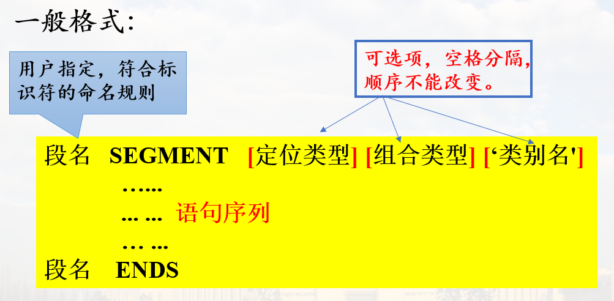
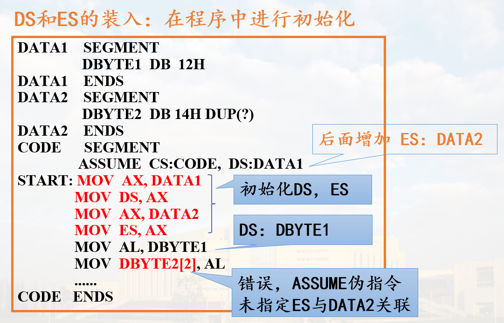
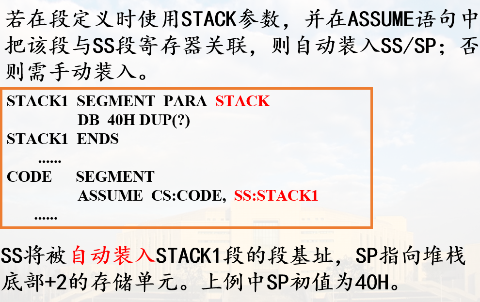
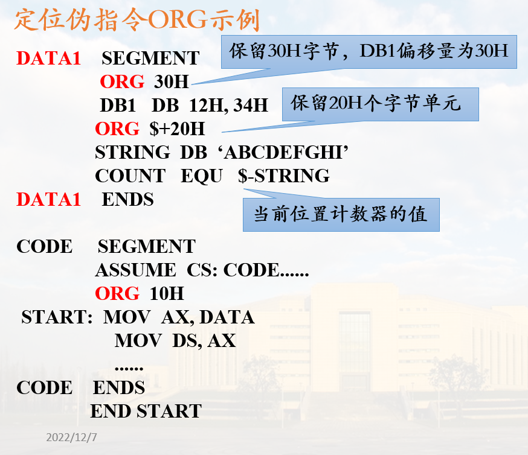

常用伪指令
一. 数据定义伪指令
数据定义伪指令用于定义变量, 指定变量类型, 给变量赋初值, 分配存储空间
1. 格式
[变量名] 伪操作 初值表
伪操作有5种:
- DB: 字节变量，每个数据占一字节
- DW: 字变量，每个数据占两字节，低字节在低地址单元
- DD: 双字变量，每个数据四字节，低字节在低地址单元
- DQ: 四字变量，每个数据八字节，低字节在低地址单元
- DT: 十字节变量，每个操作数是十字节压缩BCD码
例:
DATA1 DB 12H，34H
DATA2 DW 12+23
DATA3 DD 12345678H
DATA4 DQ 0011223344556677H
DATA5 DT 0123456789H
;10字节压缩BCD码，按地址从低到高分别为：
;89H，67H，45H，23H，01H，00H，00H，
;00H，00H，00H
2. 变量初值
(1) 初值为数值
例如: DATA1 DB 32, 30H
(2) 初值不定
例如: DA_BYTE DB ?, ?, ?
可用于存储用户输入, 初值随机
(3) 初值为字符串
- 对于DB伪指令:
- 字符串长度为 1-255个字符
- 每个字符分配一个字节单元， 从左到右将各字符的ASCII码以地址递增的顺序依次存放

如 S1 SB 'ABCDE'
- 对于DW伪指令
- 每个字符串由1-2个字符组成
- 分配两字节存储单元
- 前一个字符放在高地址, 后一个字符在低地址

例: S2 DW ‘AB’,‘D’,‘EF’
- 对于DD伪指令
- 每个字符串由1-2个字符组成
- 分配4个字节单元
- 低地址字单元存放1-2个字符, 顺序与DW相同, 高地址字单元为0
例: S3 DD 'AB', 'CD'

DW和DD伪指令定义的变量初值串不能超过两个字符, S1 DD 'ABCD'为错误数据定义
(4) 初值为变量名
注意初值为变量名的情况下, 初值实际上为变量的偏移地址(和段地址)

第二行, 表示分配20个字单元, 初值为0
如果有段基址(即DW), 则在高地址字节
此种初值不支持DB
(5) 重复操作符 DUP
一般格式: [变量名] 数据定义伪操作 表达式1 DUP (表达式2)
表达式1: 重复的次数
表达式2: 重复的内容
例如:
DATA_A DB 10H DUP(?)
DATA_B DB 20H DUP('AB') ; 分配20H * 2 = 40H 个字节, 重复字符串'AB', 其中'A'在低地址
DUP 还可以嵌套使用, 即表达式2 又可以是一个带DUP的表达式
如: DATA_C DB 10H DUP(4 DUP(2), 7)
上面的表达式中, 4 DUP(2)分配4个单元, 每个内容都是2, 7表示再分配一个单元, 内容为7, 此时共5个单元, 故DATA_C有5 * 10H = 50H个字节
3. 变量的使用
(1) 在指令语句中单独用作操作数
例如:
DA1 DB 0FEH
DA2 DW 52ACH
……
MOV AL, DA1 ; **取值**，将0FEH传送到AL
LEA SI, DA2 ; 取DA2的**偏移地址**送到SI
(2) 变址/基址类寻址操作数, 变量名用作位移量
这里的位移量相对于段首
例如:
DA3 DB 10H DUP(?)
DA4 DW 10H DUP(1)
MOV DA3[SI], AL
ADD DX, DA4[BX][DI]
二. 符号定义伪指令
1. 等值语句
格式: 符号名 EQU 表达式
常数或数值表达式
COUNT EQU 5
NUM EQU COUNT+5
地址表达式
ADDR1 EQU DS:[BP+14]
变量、寄存器名或指令助记符
CREG EQU CX
CBD EQU DAA ; DAA: BCD加法调节指令
在同一个源程序中, 同一符号不能用EQU定义多次
2. 等号语句
格式: 符号名 = 表达式
例如:
COUNT = 5
NUM = 14H
NUM = NUM + 10H
同一符号可以用等号语句多次定义
等号语句不能为指令助记符定义别名
符号定义伪指令不会为符号分配存储单元，定义的符号没有地址属性和类型属性
例如:
COUNT EQU 5
……
MOV BX, OFFSET COUNT ; WRONG
MOV AX, SEG COUNT ; WRONG
三. 段定义伪指令 IMPORTANT
伪指令SEGMENT/ENDS用于定义一个逻辑段,成对使用，分别表示段定义的开始与结束。
一般格式:

定位类型
定位类型用于告知汇编程序如何决定段的地址边界，即第一个可存放数据的单元位置
- PARA: 表示该段从一个小节的边界开始存放数据, OH结尾地址,定义逻辑段时缺省的定位类型为PARA
一个小节对应16个单元(0H结尾的地址)
PARA定位类型会有空间浪费问题
- BYTE: 表示该段起始数据单元地址可以是任一地址值
- WORD: 表示该段从一个偶数地址单元开始存放数据(最多浪费一个字节)
- PAGE: 表示该段从一个页面(256个单元, 00H结尾)的边界开始存放数据,以00H结尾的地址
组合类型
组合类型主要用在有多个模块(多个.asm文件)的程序中，用来指定段与段之间的连接关系
- NONE(默认): 表示本段与其他段无连接关系
- PUBLIC: 在满足定位类型的前提下，将与该段同名的段邻接在一起，形成一个新的逻辑段，共用一个段基址
- STACK: 把所有同名STACK类型的段连接成一个连续段，且系统自动对SS和SP进行初始化
用户程序中一般至少有一个段用STACK说明，否则需要手动初始化SS和SP
- COMMON: 产生一个覆盖段。在多个模块连接时，把用COMMON说明的同名段置成相同的段基址，共享存储区
COMMON 的空间不是首位相接的, 而是共用一段内存
- AT 表达式: 直接指定段基址, 表示本段可定位在表达式所指示的小节边界上
- MEMORY: 表示本段在存储器中应定位在所有其它段之后的最高地址上
类别名
用单引号括起来的字符串，比如‘DATA’,为某一个段或几个相同类型段设定类型名称
连接程序时，把类别名相同的段存放在相邻的存储区
表示类别名的字符串可任意选定，但不能使用程序中的标号、变量名或其它定义的符号
例子

注意段基址
四. 设定段寄存器伪指令 ASSUME
格式:
ASSUME 段寄存器名:段名[，段寄存器名:段名，...]
说明:
- ASSUME的作用是告诉汇编程序,源程序中定义的逻辑段与哪个段寄存器关联
- ASSUME并不设置各个段寄存器的值，DS、ES段寄存器的值由程序装入，CS值系统自动装入，SS可以自动设定(使用STACK组合类型)或手动装入
示例
DS 和 ES的装入

注意程序里不能直接把立即数赋给段寄存器, 需要AX中转
SS的装入

CS的装入
-
按照END伪指令指定的地址装入初始CS和IP
格式:
END [起始地址] -
在程序运行期间，段间转移类指令，CPU自动修改CS和IP，指向新的代码段
五. 过程定义伪指令
格式:
过程名 PROC [NEAR|FAR]
......
RET
......
过程名 ENDP
过程名是子程序的名称，用作过程调用指令CALL的目的操作数；具有段(所处逻辑段)、偏移量(距逻辑段的偏移)和距离(只能在同一个段内被调用, 可用PTR修改)三个属性
每一个过程中必须包含有返回指令RET,其作用是从该过程返回到主程序
六. 定位伪指令 ORG
数据定义伪指令如下:
VAR1 DB 10H, 20H
VAR2 DW 30H, 40H
汇编时如何安排变量在存储器中的位置?
使用位置计数器(地址计数器)指示逻辑段中数据或指令的地址
源程序中使用符号$来表示位置计数器的当前值
ORG指令用于修改数据计数器$的值
格式: ORG 数值表达式
作用: 将数值表达式的值赋给位置计数器$
说明: 表达式的值必须为正值，表达式中也可以包含$
示例

其中EQU即为串长度(字节)
小节
伪指令语句不生成目标代码；
各伪指令的功能、格式；
数据定义伪指令：初值表，存储规则，变量属性；
符号定义伪指令：不分配存储空间，无属性；
段定义伪指令：SEGMENT/ENDS；
ASSUME伪指令：关联段寄存器与逻辑段；
段寄存器装入：DS,ES,SS,CS装入方法
过程定义伪指令：PROC/ENDP,过程名属性
ORG伪指令：修改位置计数器的值；